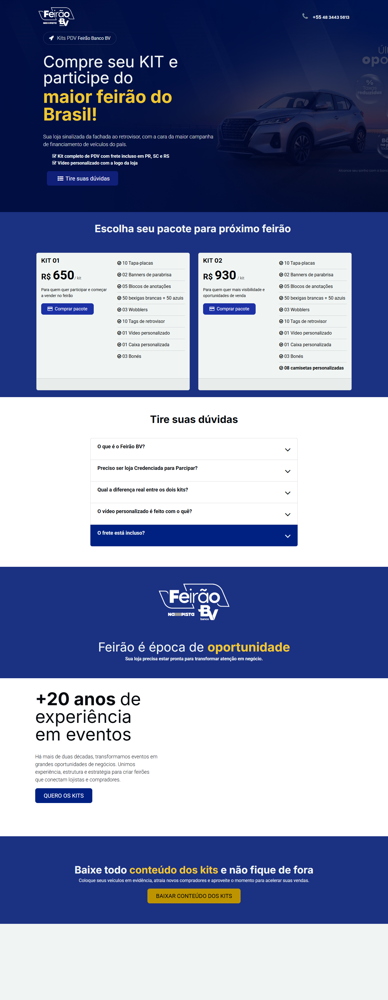

SIMIO · dossiê de candidato · campanha simio-20261119-174043-8bbc · gerado em 2026-11-19T21:22:03+00:00
https://www.dudaproducoes.com.br/
REVIEW_REQUIRED Prioridade MEDIUM · Cenário B_AMBIGUOUS_COMMUNICATION · Revisão humana: PENDING
Este dossiê apresenta indícios para apoio à auditoria. Não constitui conclusão regulatória. As conclusões automatizadas devem ser verificadas contra as evidências brutas abaixo (screenshots, catálogo e arquivos com hash). Conteúdo de terceiros é exibido como texto; links não são clicáveis por segurança.
A página analisada pertence à empresa Duda Produções Ltda. (CNPJ 08.343.103/0001-66) e destina-se à venda B2B de kits de materiais promocionais de PDV (banners, tapa-placas, bexigas, vídeos) para lojistas de veículos participarem do 'Feirão Na Pista Banco BV'. Não há oferta de serviços financeiros nem atuação como correspondente bancário perante consumidores finais. Entretanto, a comunicação apresenta ambiguidade visual relevante (B_AMBIGUOUS_COMMUNICATION): a página utiliza exclusivamente a identidade visual e o logotipo do 'Feirão Na Pista Banco BV' no cabeçalho e no corpo do site, enquanto a identificação da empresa fornecedora (Duda Produções e seu CNPJ), embora presente no código HTML/DOM e no título da aba, não está visível na página renderizada (o rodapé aparece em branco na captura de tela). Recomenda-se revisão humana para verificar se se trata de fornecedor homologado de campanha e avaliar a adequação da transparência visual da empresa responsável na página. [Revisor: CONFIRM] A hipótese do analista é sólida e bem fundamentada nas evidências. Trata-se de uma página B2B da empresa Duda Produções Ltda. (CNPJ 08.343.103/0001-66) voltada à venda de kits promocionais de PDV (banners, tapa-placas, bexigas) para lojistas de veículos no âmbito da campanha 'Feirão Na Pista Banco BV'. Não há captação de clientes finais para produtos financeiros. Contudo, a classificação REVIEW_REQUIRED com prioridade MEDIUM se justifica plenamente: a página utiliza o logotipo 'Feirão Na Pista Banco BV' no topo como marca principal e a identificação visual da empresa responsável (Duda Produções) não aparece renderizada no rodapé da captura de tela (embora exista no DOM), além de ser necessária validação interna para confirmar se o fornecedor é homologado pelo banco para comercializar tais materiais com a marca.

| Ref | Tipo | Local | Conteúdo |
|---|---|---|---|
| E-URL | domain | url | URL final: https://www.dudaproducoes.com.br/ (domínio: www.dudaproducoes.com.br) |
| E-DISC-001 | text | search_index | Índice de busca (grounding): dudaproducoes.com.br — **Fonte / Domínio:** `dudaproducoes.com.br` | **Evidência de Uso:** Página dedicada à venda de materiais intitulada *"Kits PDV Feirão Banco BV"* | Sua loja sinalizada da fachada ao retrovisor, com a cara da maior campanha de financiamento de veículos do país"* | Sua loja sinalizada da fachada ao retrovisor, com a cara da maior campanha de financiamento de veículos do país"*, comercializando identidade visual do banco diretamente para lojistas do Sul do país |
| E-SHOT-VIEWPORT | screenshot | viewport | evidence\Cda0206272c\attempt-1\viewport.png (sha256 1ec81f9b66745b65…) |
| E-SHOT-FULL | screenshot | page | evidence\Cda0206272c\attempt-1\fullpage.png (sha256 a0620151754df1f9…) |
| E-TITLE | title | head | KIT FEIRÃO BV - DUDA PRODUÇÕES |
| E-META-1 | meta | head | description: Planejamos e produzimos feirões completos para concessionárias, lojas e bancos especialistas em crédito automotivo — do espaço à experiência do cliente. |
| E-META-2 | meta | head | og:site_name: Duda Eventos e Produções |
| E-META-3 | meta | head | og:title: KIT FEIRÃO BV - DUDA PRODUÇÕES |
| E-META-4 | meta | head | og:description: Planejamos e produzimos feirões completos para concessionárias, lojas e bancos especialistas em crédito automotivo — do espaço à experiência do cliente. |
| E-CANONICAL | meta | head | https://dudaproducoes.com.br/empresas |
| E-HEAD-1 | heading | page | Compre seu KIT e participe do |
| E-HEAD-2 | heading | page | maior feirão do Brasil! |
| E-HEAD-3 | heading | page | Escolha seu pacote para próximo feirão |
| E-HEAD-4 | heading | page | KIT 01 |
| E-HEAD-5 | heading | page | KIT 02 |
| E-HEAD-6 | heading | page | Tire suas dúvidas |
| E-HEAD-7 | heading | page | Feirão é época de oportunidade |
| E-HEAD-8 | heading | page | +20 anos de experiência em eventos |
| E-HEAD-9 | heading | page | Baixe todo conteúdo dos kits e não fique de fora |
| E-HDR | text | header | +55 48 3443 5613 |
| E-FOLD | text | viewport (acima da dobra) | +55 48 3443 5613 Kits PDV Feirão Banco BV Compre seu KIT e participe do maior feirão do Brasil! Sua loja sinalizada da fachada ao retrovisor, com a cara da maior campanha de financiamento de veículos do país. Kit completo de PDV com frete incluso em PR, SC e RS Vídeo personalizado com a logo da loja Tire suas dúvidas Escolha seu pacote para próximo feirão DUDA PRODUÇÕES LTDA. CNPJ 08.343.103/0001-66 Termos Política de Privacidade - Imagens Meramente ilustrativas - Consulte Condições |
| E-FTR | text | footer | DUDA PRODUÇÕES LTDA. CNPJ 08.343.103/0001-66 Termos Política de Privacidade - Imagens Meramente ilustrativas - Consulte Condições |
| E-NAV | nav | header | <https://www.dudaproducoes.com.br/> | +55 48 3443 5613 <tel:5548984240101> |
| E-CTA-1 | cta | page | Pular para o conteúdo <https://www.dudaproducoes.com.br/#wrap> |
| E-CTA-2 | cta | page | Tire suas dúvidas <https://www.dudaproducoes.com.br/#faqs> |
| E-CTA-3 | cta | page | Comprar pacote |
| E-CTA-4 | cta | page | Comprar pacote |
| E-CTA-5 | cta | page | O que é o Feirão BV? |
| E-CTA-6 | cta | page | Preciso ser loja Credenciada para Parcipar? |
| E-CTA-7 | cta | page | Qual a diferença real entre os dois kits? |
| E-CTA-8 | cta | page | O vídeo personalizado é feito com o quê? |
| E-CTA-9 | cta | page | O frete está incluso? |
| E-CTA-10 | cta | page | QUERO OS KITS <https://www.dudaproducoes.com.br/#planos> |
| E-CTA-11 | cta | page | BAIXAR CONTEÚDO DOS KITS <https://www.dudaproducoes.com.br/web/content/ir.attachment/8221/datas?download=true> |
| E-CONTACT-1 | contact | header | +55 48 3443 5613 <tel:5548984240101> |
| E-CONTACT-2 | contact | header | +55 48 3443 5613 <tel:5548984240101> |
| E-IMG-1 | image | header (acima da dobra) | imagem alt='Logo of Duda Eventos e Produções' src= (141x100, acima da dobra) |
| E-IMG-2 | image | header (acima da dobra) | imagem alt='Duda Eventos e Produções' src=https://www.dudaproducoes.com.br/web/image/website/1/logo/Duda%20Eventos%20e%20Produ%C3%A7%C3%B5es?unique=b706ff7 (141x100, acima da dobra) |
| E-IMG-3 | image | footer (acima da dobra) | imagem alt='' src=https://www.dudaproducoes.com.br/web/image/8254-f6ae5755/logo_duda.webp (160x93, acima da dobra) |
| E-IMG-4 | image | footer (acima da dobra) | imagem alt='' src=https://www.dudaproducoes.com.br/web/image/8345-1137612a/Logo%20BV%2001%20Cor.webp (65x47, acima da dobra) |
| E-TXT-001 | text | page | Kits PDV Feirão Banco BV |
| E-TXT-002 | text | page | O que é o Feirão BV? |
| E-TXT-003 | text | page | Preciso ser loja Credenciada para Parcipar? |
| E-TXT-004 | text | page | DUDA PRODUÇÕES LTDA. |
| E-TXT-005 | text | page | CNPJ 08.343.103/0001-66 |
| Dimensão | Sinal | Achado | Refs |
|---|---|---|---|
| VISUAL_IDENTITY | CONFUSION | O layout da página usa exclusivamente a identidade visual da campanha 'Feirão Na Pista Banco BV' desde o topo até o fim da página, sem exibir visualmente a marca da produtora responsável. | E-SHOT-VIEWPORT E-SHOT-FULL |
| DECLARED_COMMERCIAL_IDENTITY | CONFUSION | A empresa 'DUDA PRODUÇÕES LTDA.' (CNPJ 08.343.103/0001-66) consta no domínio, no título da página e no texto extraído do rodapé, mas não aparece visível nas capturas de tela (o cabeçalho exibe o logo do Feirão BV e o rodapé aparece como um bloco branco sem texto visível). | E-URL E-TITLE E-FTR E-TXT-004 E-TXT-005 E-SHOT-FULL |
| CORRESPONDENT_TRANSPARENCY | NEUTRAL | Trata-se de uma operação B2B de venda de materiais promocionais (kits de PDV) por uma produtora de eventos (+20 anos de experiência em eventos), e não de um correspondente bancário ofertando crédito a consumidores finais. Contudo, não há explicação visível sobre o vínculo comercial ou homologação da produtora junto ao Banco BV. | E-META-1 E-FOLD E-HEAD-8 E-SHOT-FULL |
| INSTITUTIONAL_LANGUAGE | NEUTRAL | A linguagem é voltada a lojistas de veículos ('Compre seu KIT e participe do maior feirão do Brasil!', 'Sua loja sinalizada da fachada ao retrovisor') e descreve a atuação como produtora de eventos ('Há mais de duas décadas, transformamos eventos em grandes oportunidades de negócios'). | E-FOLD E-HEAD-1 E-HEAD-8 E-SHOT-FULL |
| LOGO_USAGE | CONFUSION | O logotipo 'Feirão Na Pista Banco BV' ocupa a posição principal de marca no topo esquerdo da página e em seção central, sem que o logotipo da Duda Produções esteja visível na renderização. | E-SHOT-VIEWPORT E-SHOT-FULL E-IMG-4 |
| SERVICE_JOURNEY | LEGITIMATE | A jornada comercial consiste exclusivamente na venda de pacotes de materiais físicos e digitais de ponto de venda (KIT 01 por R$ 650 e KIT 02 por R$ 930, contendo tapa-placas, banners, bexigas, wobblers) para lojistas, sem captação de propostas de financiamento ou serviços bancários. | E-HEAD-3 E-HEAD-4 E-HEAD-5 E-CTA-3 E-CTA-4 E-SHOT-FULL |
| CONTACT_CHANNELS | NEUTRAL | Exibe apenas um telefone comercial fixo/móvel (+55 48 3443 5613) no cabeçalho, sem alegar ser central de atendimento ou SAC do banco. | E-HDR E-CONTACT-1 E-SHOT-VIEWPORT |
| CONSUMER_CONFUSION | CONFUSION | Embora o público-alvo sejam lojistas de veículos (B2B) adquirindo kits de PDV, o uso exclusivo do logotipo e da identidade visual do Feirão Banco BV na página renderizada — com a omissão visual da razão social/logotipo da Duda Produções no rodapé — gera ambiguidade sobre se a venda dos kits é operada diretamente pelo banco ou por fornecedor terceiro. | E-SHOT-VIEWPORT E-SHOT-FULL E-FTR |
A página analisada pertence à empresa Duda Produções Ltda. (CNPJ 08.343.103/0001-66) e destina-se à venda B2B de kits de materiais promocionais de PDV (banners, tapa-placas, bexigas, vídeos) para lojistas de veículos participarem do 'Feirão Na Pista Banco BV'. Não há oferta de serviços financeiros nem atuação como correspondente bancário perante consumidores finais. Entretanto, a comunicação apresenta ambiguidade visual relevante (B_AMBIGUOUS_COMMUNICATION): a página utiliza exclusivamente a identidade visual e o logotipo do 'Feirão Na Pista Banco BV' no cabeçalho e no corpo do site, enquanto a identificação da empresa fornecedora (Duda Produções e seu CNPJ), embora presente no código HTML/DOM e no título da aba, não está visível na página renderizada (o rodapé aparece em branco na captura de tela). Recomenda-se revisão humana para verificar se se trata de fornecedor homologado de campanha e avaliar a adequação da transparência visual da empresa responsável na página.
Empresa identificada na página sem declaração de relação de correspondente; anunciar produtos da marca não comprova vínculo.
| Tipo | Valor | Ref | Contexto |
|---|---|---|---|
| domain | dudaproducoes.com.br | E-URL | |
| cnpj | 08.343.103/0001-66 | E-FOLD | deo personalizado com a logo da loja Tire suas dúvidas Escolha seu pacote para próximo feirão DUDA PRODUÇÕES LTDA. CNPJ 08.343.103/0001-66 |
| legal_name | DUDA PRODUÇÕES LTDA | E-FOLD | |
| trade_name | Duda Eventos e Produções | E-META-2 | |
| phone | 48 3443 5613 | E-HDR |
Mapeamento indicativo para apoio à auditoria. Não constitui conclusão regulatória; a decisão definitiva pertence à auditoria.
Fonte: NORMATIVE
Art. 14. O contrato de correspondente deve estabelecer: [...] II - vedação à utilização, pelo contratado, de logomarca ou de outros atributos que sejam similares aos adotados pela instituição contratante em suas agências, postos de atendimento, sítio eletrônico na internet, aplicativo ou outras plataformas de comunicação em rede;
Hipótese: Uso de logomarca ou de atributos similares aos adotados pela contratante em seus canais. A norma disciplina correspondentes contratados; o responsável não foi identificado como correspondente.
Evidência observada: E-IMG-4 E-SHOT-FULL E-SHOT-VIEWPORT
Informação faltante:
Fonte: NORMATIVE
Art. 14. O contrato de correspondente deve estabelecer: [...] III - divulgação ao público, pelo contratado, de sua condição de prestador de serviços à instituição contratante, identificada pelo nome com que é conhecida no mercado, com descrição dos produtos e serviços oferecidos e canais de contato da instituição contratante, inclusive de sua ouvidoria, em local visível, em destaque e em formato legível, por meio de: a) sítio eletrônico do correspondente na internet, acessível na página inicial; b) aplicativo e outras plataformas de comunicação em rede do correspondente; [...]
Hipótese: Há declaração da condição de correspondente/prestador, mas outros elementos da página (DECLARED_COMMERCIAL_IDENTITY, CONSUMER_CONFUSION) podem contradizê-la ou reduzir seu efeito (destaque, legibilidade e identificação da contratante a verificar). A norma disciplina correspondentes contratados; o responsável não foi identificado como correspondente.
Evidência observada: E-FTR E-SHOT-FULL E-SHOT-VIEWPORT E-TITLE E-TXT-004 E-TXT-005 E-URL
Informação faltante:
Fonte: NORMATIVE
Art. 3º O correspondente atua por conta e sob as diretrizes da instituição contratante, que assume inteira responsabilidade pelo atendimento prestado aos clientes e usuários por meio do contratado.
Evidência observada: E-CTA-3 E-CTA-4 E-HEAD-3 E-HEAD-4 E-HEAD-5 E-SHOT-FULL
Se o responsável não for correspondente contratado, os indícios podem caracterizar uso indevido de marca ou fraude, fora do escopo da Res. 4.935: avaliar encaminhamento às áreas jurídica/segurança.
Limitações: requisitos contratuais/internos não fornecidos: mapeamento limitado ao texto normativo
Decisão: CONFIRM → REVIEW_REQUIRED / MEDIUM
A hipótese do analista é sólida e bem fundamentada nas evidências. Trata-se de uma página B2B da empresa Duda Produções Ltda. (CNPJ 08.343.103/0001-66) voltada à venda de kits promocionais de PDV (banners, tapa-placas, bexigas) para lojistas de veículos no âmbito da campanha 'Feirão Na Pista Banco BV'. Não há captação de clientes finais para produtos financeiros. Contudo, a classificação REVIEW_REQUIRED com prioridade MEDIUM se justifica plenamente: a página utiliza o logotipo 'Feirão Na Pista Banco BV' no topo como marca principal e a identificação visual da empresa responsável (Duda Produções) não aparece renderizada no rodapé da captura de tela (embora exista no DOM), além de ser necessária validação interna para confirmar se o fornecedor é homologado pelo banco para comercializar tais materiais com a marca.
| Tema | Severidade | Questionamento | Refs |
|---|---|---|---|
| authorized_communication | MEDIUM | A página comercializa kits físicos de ponto de venda (PDV) para lojistas participarem da campanha 'Feirão Na Pista Banco BV' (operação B2B, sem oferta de crédito ao consumidor final). É plausível que a Duda Produções Ltda. seja uma agência/fornecedora oficial homologada pelo Banco BV para produzir e distribuir o material da campanha, o que precisa ser verificado internamente. | E-TITLE E-META-1 E-FOLD E-SHOT-FULL |
| unanalyzed_visual_context | MEDIUM | Os dados de identificação da empresa fornecedora ('DUDA PRODUÇÕES LTDA. CNPJ 08.343.103/0001-66') e a imagem de logotipo (E-IMG-3) constam no DOM do rodapé, mas a área do rodapé aparece totalmente em branco/cinza claro na captura de página inteira, impedindo verificar se houve falha de renderização ou falta de contraste (texto branco sobre fundo claro). Além disso, as respostas do FAQ (como 'Preciso ser loja Credenciada para Parcipar?') estão ocultas em acordeões fechados. | E-FTR E-IMG-3 E-CTA-6 E-SHOT-FULL |
| Fonte | Consulta / hipótese | URL original | Título / trecho |
|---|---|---|---|
| grounding | sites ou páginas de lojas de veículos, multimarcas e promotoras que divulgam 'Feirão Banco BV' ou 'Feirão bv financeira' usando a identidade da marca de forma que possa gerar dúvida se o evento ou canal pertence diretamente ao Banco BV H5-establishment:feirao | https://www.dudaproducoes.com.br/ | dudaproducoes.com.br **Fonte / Domínio:** `dudaproducoes.com.br` | **Evidência de Uso:** Página dedicada à venda de materiais intitulada *"Kits PDV Feirão Banco BV"* | Sua loja sinalizada da fachada ao retrovisor, com a cara da maior campanha de financiamento de veículos do país"* | Sua loja sinalizada da fachada ao retrovisor, com a cara da maior campanha de financiamento de veículos do país"*, comercializando identidade visual do banco diretamente para lojistas do Sul do país |
Original: https://www.dudaproducoes.com.br/
Final: https://www.dudaproducoes.com.br/
| Artefato | Caminho | SHA-256 | Bytes |
|---|---|---|---|
| screenshot_viewport | evidence\Cda0206272c\attempt-1\viewport.png | 1ec81f9b66745b656f766e0df60f64cb7620dd1ee5eeaed3253c8c501d3571ce | 510139 |
| screenshot_full | evidence\Cda0206272c\attempt-1\fullpage.png | a0620151754df1f9cc97791afaed5a5afb653f08849c0e708e2d374cdf92049e | 701980 |
| html | evidence\Cda0206272c\attempt-1\page.html.txt | 0e280df8126afa95745b1274d4a99277d08345d8972bae282c65b32e61315d63 | 73321 |
| text | evidence\Cda0206272c\attempt-1\text.txt | e1475a52e31646f3c91d82fe25575dd693cbafaafdab3d1b1fe0df85c4d8707c | 1971 |
| page_data | evidence\Cda0206272c\attempt-1\page.json | f3053147ddc055f3a5e1d3cdd0867d8427a529b2f635d8ea17614d3d47935c9f | 9522 |
| Quando | De | Para | Nota |
|---|---|---|---|
| 2026-11-19T18:10:10+00:00 | DISCOVERED | QUEUED | prioritised (score 2.5) |
| 2026-11-19T18:15:50+00:00 | QUEUED | COLLECTING | |
| 2026-11-19T18:16:03+00:00 | COLLECTING | COLLECTED | |
| 2026-11-19T18:16:03+00:00 | COLLECTED | ANALYZING | |
| 2026-11-19T18:16:57+00:00 | ANALYZING | REVIEWING | |
| 2026-11-19T18:17:14+00:00 | REVIEWING | COMPLETED |